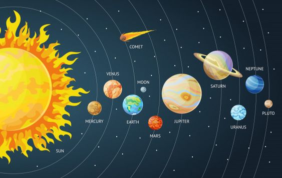

النظام الشمسي
النظام الشمسي هو نظام الجاذبية المرتبط بالشمس والأجسام التي تدور حولها.
الكواكب
الكواكب هي أجسام سماوية تدور حول النجوم وتتميز بالخصائص التالية:
- الحجم: تختلف الكواكب في حجمها من كبير مثل المشتري إلى صغير مثل عطارد.
- التكوين: قد تكون الكواكب صخرية أو غازية أو مزيجًا من الاثنين.
- المدارات: تدور في مدارات إهليلجية حول الشمس.
- الجو: بعضها يحتوي على غلاف جوي.